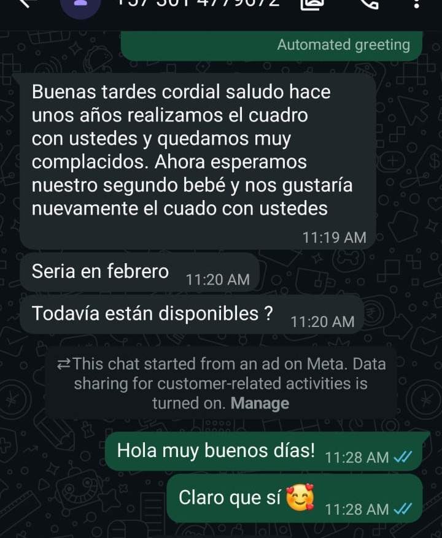

Conserva para siempre la ternura que te genera hoy.
Su manito. Su piecito. Su primera foto y esos pequeños recuerdos de sus primeros días, reunidos en una pieza creada solamente para tu bebé.


Merecen algo mejor que un cajón.
Una manera hermosa de conservar detalles de mucho valor, en lugar de dejarlos escondidos en un viejo cajón.
Y sí: ahora podemos hacerlo desde una fotografía.
Combinamos modelado asistido por inteligencia artificial, impresión 3D de alta precisión y acabado manual para recrear cuidadosamente las formas y detalles de su manito y su piecito.
Queremos que puedas reconocerlo.
Antes de producir revisamos personalmente las fotografías de la manito y el piecito. Si alguna no permite conseguir el nivel de detalle que buscamos, te pediremos una nueva antes de continuar.
Solo cuando las fotografías son adecuadas iniciamos el modelado, la impresión 3D y el acabado manual.
Familias que ya confiaron en Familia Real.
Durante años hemos creado recuerdos para familias que querían conservar esta etapa de una manera especial.
Quedó muy bello, muchas gracias.Mensaje real recibido por WhatsApp
Mil gracias. Hermoso todo. Los recomendaré.Mensaje real recibido por WhatsApp
Estoy feliz con mi trabajo… feliz con cada detalle. Qué lindo. Qué arte tan bonita.Mensaje real recibido por WhatsApp
Hace unos años realizamos el cuadro con ustedes y quedamos muy complacidos. Ahora esperamos nuestro segundo bebé y nos gustaría nuevamente el cuadro con ustedes.



Cada detalle tiene un lugar.
En pocos segundos puedes ver cómo reunimos las piezas que hacen único cada cuadro.
A esto sumamos el fondo, los datos de nacimiento, la fotografía y los espacios que hayas elegido para conservar sus primeros recuerdos.
Hay una cosa que no podemos detener.
Cada semana sus manos crecen. Cambian sus facciones. Esa etapa de recién nacido que hoy parece que va a durar para siempre se transforma más rápido de lo que imaginamos.
No podemos detener el tiempo. Pero sí podemos ayudarte a conservar un pedacito.
Ahora imagina el de tu bebé.
Su nombre. Su foto. Sus colores. Su personaje. Sus recuerdos. Su manito y su piecito. Diseñarlo es gratis y podrás verlo antes de decidir.
Diseñar el de mi bebéTodavía no tienes que pagar. Primero hazlo suyo.